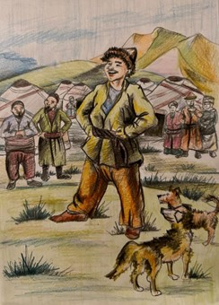

Ben, Aldar Köse... Kazak, Kırgız, Özbek, Türkmen ve Karakalpak Türklerinin masal ve fıkralarının başkahramanlarından biriyim. Beni Anadolu masallarında kısaca “Köse” olarak adlandırırlar. Masallarda fıkralarda aldatıcı bir kahraman olarak yer alırım. Adımdaki “Aldar” kelimesi de “hileci, aldatıcı” anlamına gelir. Masallarda ve fıkralarda insanları, devleri ve Şeytanı aldatırım. Aldatma konusunda son derece mahirimdir. Kurnazlık timsali tilkiyle baş aldatıcı Şeytanı bile ustaca kandırırım. Aldattıklarım arasında padişahlar, hanlar ve tüccarlar bile vardır. Dünya halk anlatılarındaki “hilebaz” tipinin Türk Dünyası masallarındaki en önemli temsilcisiyimdir. En önemli özelliğim yalancılık ve hilekârlıktır. Saf ve cahil görüntümün ardında zeki ve hilekâr bir tip yatar. Çoğunlukla zenginler, cimriler ve hanlarla uğraşırım. Zekâmın göstergesi olan yalanlarım ve oyunlarımla muhataplarını kandırır, istediklerimi elde ederim. Önce saf insan görüntüsüyle düşmanlarımın dikkatlerini dağıtır, ardından da kurnazlıkla haklarından gelirim.
